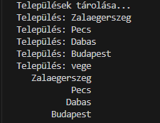

A program célja települések bekérése, tömbben tárolása, ennek gyakorlása.
Szükséges:
VSCode-ban betöltjük a projekt könyvtárát, majd futtatjuk a Java kiterjesztéssel.
Indítás után a program azonnal bekéri a települések nevét, “vege” végjelig.
A bekért településneveket megjeleníti.
